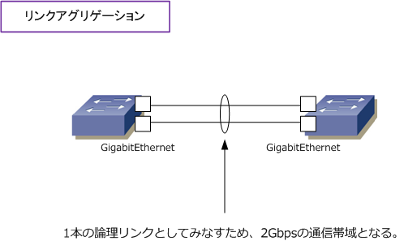
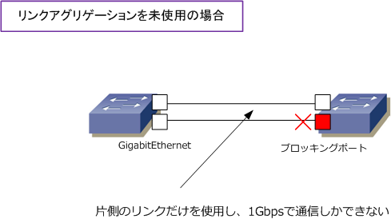
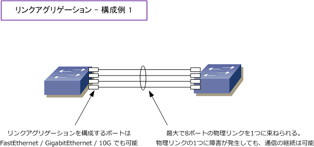
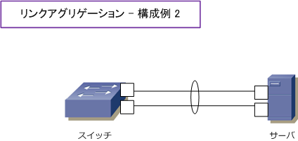
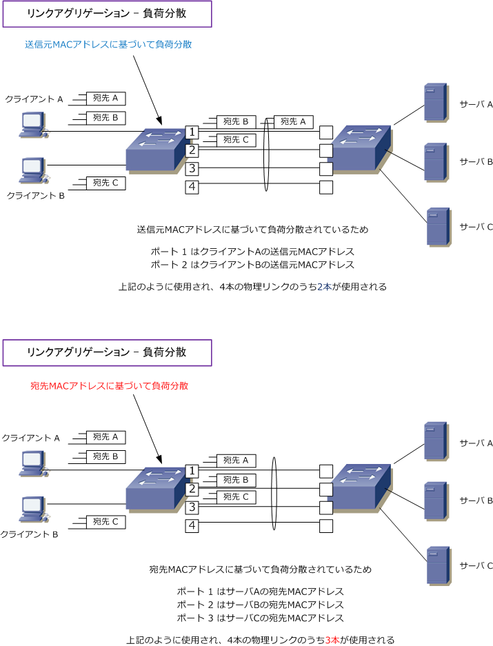

Link Aggregation
リンクアグリゲーションとは
リンクアグリゲーションとは、複数の物理リンクを束ねて1つの論理リンクとして扱うことのできる技術の ことです。リンクアグリゲーションは、通信時に複数の物理リンクを同時に使用できることから、下図では 2ポートのGigabitEthernetポートをリンクアグリゲーションしているので 1Gbps×2 = 2Gbps の帯域幅で 通信することができます。

リンクアグリゲーションを使用せず2本のケーブルでスイッチ間を接続すると、スパニングツリーが有効なら ループが発生しないようにブロッキングポートが発生して、1Gbpsしか通信に使用できなくなります。ゆえに 2台のスイッチ間で冗長リンクを設ける場合、リンクアグリゲーションを使用するのが一般的です。ちなみに リンクアグリゲーションはIEEE802.3adで標準化され、CiscoではEtherChannelという用語を使用しています。

リンクアグリゲーションの接続構成
リンクアグリゲーションは、2台のスイッチ間で最大8本の物理リンクを1つの論理リンクに束ねられます。 また、リンクアグリゲーションは、FastEthernetポートでも、GigabitEthernetポートでも構成できます。 複数の物理リンクの1本に障害が発生しても、残りの通信帯域で通信可能であり、耐障害性も高まります。

リンクアグリゲーションは2台のスイッチ間接続だけでなく、サーバ⇔スイッチ間においても実装可能です。

リンクアグリゲーションの設定
◇ リンクアグリゲーション機能のON リンクアグリゲーションの設定方法は大きく2つあります。1つは各スイッチポートで論理グループを作成して、 リンクアグリゲーションを手動で機能をONにするスタティックな設定方法です。もう1つは各スイッチポートで 論理グループを作成して、LACPプロトコルを使用しスイッチ間でネゴシエーションして動的に機能をONにする ダイナミックな設定です。LACP（Link Aggregation Control Protocol）はIEEE802.3adの標準化プロトコル。
◇ リンクアグリゲーションにおけるトラフィック負荷分散 リンクアグリゲーションでは、1つの論理リンクを通信時に使用するとはいえ、実際には複数の物理ポートに トラフィックを分散している訳です。そのトラフィックの負荷分散方法には、送信元のMACアドレスに基づき 分散したり、宛先のMACアドレスに基づいて分散したりする方法があります。下図例の2パターンにおいては 宛先MACアドレスに基づいて負荷分散する方がより効率よく通信帯域を使用できることが分かります。ただし どの分散方法が良いのかはそのNW構成に依存しますし、一般的に送信元MACアドレスの負荷分散が多いです。

※ 負荷分散には送信元MACアドレス、宛先MACアドレスに基づく方式以外に、送信元IP / 宛先IPアドレスに基づく方式もあります。
チーミングとは →